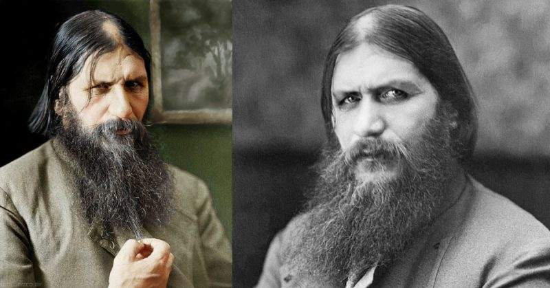

When I was little, one of the cartoon villains that terrified me the most was Rasputin from the movie Anastasia. He was just a really creepy, scary looking dude.
As I grew up and learned that animators tend to exaggerate certain features to enhance characterization, I assumed that’s what they did with the animated Rasputin. But when we covered the fall of the Romanov family in my high school history classes, I discovered that, no, Rasputin was actually that creepy.
 His life story is just as bizarre and fantastical as any movie as well. Grigori Rasputin entered the lives of the Russian royal family in 1905, when Tsar Nicholas II and his wife Alexandra hired him as a healer to help their son Alexei, who suffered from hemophilia. Though the boy’s doctors had claimed he would die, Rasputin was said to be able to offer the boy some relief through prayer. As Rasputin continued to help Alexei, he grew more and more influential within the Russian royalty, especially with the Tsarina. However, the rest of the Russian elite were not so pleased with him and his behavior caused him to become a rather controversial figure. When Tsar Nicholas left court to lead the army into World War I, Rasputin extended his influence until the Tsarina was essentially his puppet. It is widely believed that Rasputin was murdered for political reasons stemming from his bizarre control over the Romanovs.1 Even his death was as mysterious as the man: legend has it that he was poisoned, shot, stabbed, clubbed, and somehow surviving that, was tied up in a carpet and thrown into a freezing river, where he somehow escaped his bonds before finally drowning. Of course, the validity of this legend is up for debate, but nonetheless, Rasputin remains one of the more mysterious figures in history.